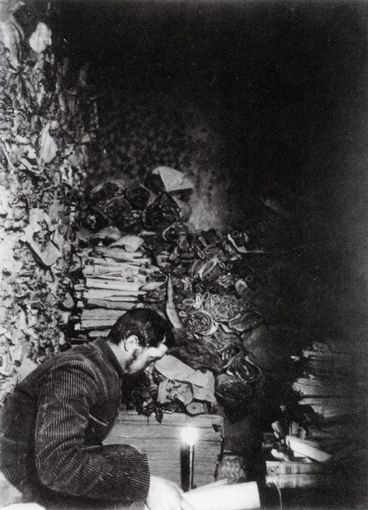

The question of this pageWhat is the project about?
The project models one story told by the Wikipedia article: manuscripts sealed in a cave, found in 1900, sold and moved across the world, and reconnected online.
The 28 entity records of the TEI standOff (persons, places, organisations, objects, events). Sixteen of them are the entities of the theoretical model on the Models page. The standOff also describes the digital surrogate and five time-spans; the Manuscripts tab below lists the digital surrogate too.
1.1
One frozen revision
The source
We worked on one frozen revision of the English Wikipedia article.
Most of the manuscripts come from a cache sealed in the Library Cave of the Mogao Caves, near Dunhuang. Found by Wang Yuanlu in 1900, much of the cache was sold from 1907 to Aurel Stein, Paul Pelliot, Ōtani Kōzui and others, and in 1910 most of the remaining Chinese manuscripts were taken to Beijing. Today the manuscripts are held in several countries, and the International Dunhuang Project is reuniting them in digital form.

Paul Pelliot examining manuscripts in Cave 17, the Library Cave, 1908. Photograph by Charles Nouette. Wikimedia Commons, public domain.
Events
sometime in the early 11th century
Sealing
Sealing of the Library Cave
The documents were sealed in the Library Cave.
25 June 1900
Discovery
Discovery of the Dunhuang Manuscripts
Wang Yuanlu discovered the documents in the cave.
from 1907 onwards
Purchase
Purchase involving Aurel Stein
Wang sold manuscripts to Aurel Stein.
from 1907 onwards
Purchase
Purchase involving Paul Pelliot
Wang sold manuscripts to Paul Pelliot.
No date in the source
Purchase
Purchase involving Ōtani Kōzui
Wang sold hundreds more manuscripts to Ōtani Kōzui.
1910
Transfer
Transfer of the Dunhuang Manuscripts to Beijing
Most of the remaining Chinese manuscripts were taken to Beijing.
No date in the source
Digitization
Digitization of the Dunhuang Manuscripts
The International Dunhuang Project is digitizing the manuscript collections.
1.3
People, places, institutions, manuscripts, events
Entities
The people, places, institutions, manuscripts and events encoded in the TEI file, with their authority records.
People
Name
Category
Role in the source
Authority records
Wang Yuanlu
Person
Daoist monk who discovered the documents in the cave on 25 June 1900 and from 1907 sold them to Western explorers.
The manuscripts Stein acquired: around 7,000 complete manuscripts and 6,000 fragments.
None
Manuscripts acquired by Paul Pelliot
Group of manuscripts
The manuscripts Pelliot acquired: almost 10,000 documents.
None
Manuscripts sold to Ōtani Kōzui
Group of manuscripts
The manuscripts sold to Ōtani Kōzui: hundreds more, in the source's words.
None
Remaining Chinese manuscripts moved to Beijing
Group of manuscripts
Most of the Chinese manuscripts still at Dunhuang, taken to Beijing in 1910.
None
Diamond Sutra, printed copy of 868
Single manuscript
Not named in the page; added from the International Dunhuang Programme: a printed scroll dated 868, one documented item of the corpus, bought by Stein in 1907 and now in the British Library (Or.8210/P.2).
The digitized manuscript collections, freely accessible online.
None
Events
Name
Kind of event
Role in the source
Date
Sealing of the Library Cave
Sealing
The documents were sealed in the Library Cave.
sometime in the early 11th century
Discovery of the Dunhuang Manuscripts
Discovery
Wang Yuanlu discovered the documents in the cave.
25 June 1900
Purchase involving Aurel Stein
Purchase
Wang sold manuscripts to Aurel Stein.
from 1907 onwards
Purchase involving Paul Pelliot
Purchase
Wang sold manuscripts to Paul Pelliot.
from 1907 onwards
Purchase involving Ōtani Kōzui
Purchase
Wang sold hundreds more manuscripts to Ōtani Kōzui.
No date in the source
Transfer of the Dunhuang Manuscripts to Beijing
Transfer
Most of the remaining Chinese manuscripts were taken to Beijing.
1910
Digitization of the Dunhuang Manuscripts
Digitization
The International Dunhuang Project is digitizing the manuscript collections.
No date in the source
1.4
Direct and Enriched
Evidence
Each relation is marked Direct when the frozen article states it, or Enriched when it needs another source. R16 is Enriched, drawing on the International Dunhuang Project’s own description; so are R17–R19, which add one documented manuscript from the IDP catalogue, the printed Diamond Sutra of 868. Each Enriched relation names its sources.